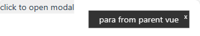

模态框
Modal
- 实验目的
-
掌握模板引用的使用掌握过渡组件的使用进一步熟悉侦听的使用进一步熟悉组件的创建和使用进一步熟悉组件的样式
- 实验内容
-
静态模态框的使用 - 无参动态模态框的使用 - 带参为模态框添加过渡效果
- 开发环境
-
操作系统 Window 10+文本编辑器 Vs Code谷歌浏览器 ChromeNode.js
- 需求分析
- 前端数据校验不通过时，给出弹窗提示
-
视口右上角显示出现3秒后消失可以手动关闭根据不同的情况，显示不同的提示出现和消失使用淡入淡出的过渡效果
- 实验步骤
- 第一阶段 静态模态框
-
模态框组件 - 创建模态框组件 Tips.vue - 在视口右上角展示一条静态数据
<script setup> </script> <template> <div class="tips">hi, there.</div> </template> <style scoped> .tips { position: fixed; top: 20px; right: 20px; color: #fff; padding: 4px 20px; background-color: rgba(0, 0, 0, 0.8); } </style>父组件 - 引入模态框组件，并使用响应式数据isOpenModal控制其显示和隐藏；添加按钮，绑定单击事件控制isOpenModal的真或假<script setup> import { ref } from 'vue'; import Tips from './components/Tips.vue'; let isOpenModal = ref(false) const setOpen = () => { // 取反并赋值无效 != // isOpenModal.value != isOpenModal.value isOpenModal.value ? isOpenModal.value = false : isOpenModal.value = true } </script> <template> <Tips v-if="isOpenModal"></Tips> <button @click="setOpen">click to open modal</button> </template> <style scoped></style>
默认隐藏模态框 
单击显示模态框
再次单击隐藏模态框 - 第二阶段 动态模态框
-
模态框组件 - 增加关闭按钮，单击时，关闭模态框；关闭按钮定位在模态框右上角
模态框组件通过defineEmits触发自定义事件传递
const emits = defineEmits(['emitClose']) const closeModal = () => { emits('emitClose') }父组件 - 响应模态框的自定义事件，关闭模态框；同时修改打开逻辑setOpen由取反调整为只打开
<Tips v-if="isOpenModal" @emit-close="closeModal"></Tips>
const closeModal = () => { isOpenModal.value = false }
带关闭按钮的模态框 - 第三阶段 传递参数模态框
-
模态框组件 - 声明数据并绑定，取代之前的静态数据；为了让父组件访问，还需要将数据变量暴露出去
import { ref } from 'vue'; let tips = ref('') defineExpose({ tips })<span>{{ tips }}</span>父组件 - 中为模态框指定ref，以便获取模态框组件实例，便于传递参数<Tips ref="modal" v-if="isOpen" @emit-close="closeModal"></Tips>
在打开逻辑setOpen中传递参数；使用前，先判断ref是否已经就绪
这里的参数数据 'para from parent vue' 可以来自任何地方
const setOpen = () => { isOpen.value = true if (modal.value) { modal.value.tips = "para from parent vue" } } 接收参数的模态框 - 调试发现：由于v-if，导致参数传递时，DOM不一定就绪，需要单击2次
- 调整思路为：显示隐藏由模态框组件根据传递的参数决定
- 模态框组件 - 通过defineProps 接收参数 show
-
const props = defineProps(['show'])
-
<div class="tips" v-if="show">hi, there.</div>
- 父组件 - 使用属性show传递变量isOpenModal
-
<Tips ref="modal" :show="isOpenModal" @emit-close="closeModal"></Tips>
- 第四阶段 延时关闭模态框
- 除了手动关闭外，还应该延时关闭；如果3秒内没有点击关闭，则自动关闭
-
父组件组件 - 使用 watch 侦听模态框的显示状态变量isModalOpen：如果真|显示，则设置定时器；如果定时器触发，则关闭模态框；记得引入侦听包
也可以使用生命周期函数 onMounted - 个人体会
watch(isModalOpen, (newval, oldval) => { if (newval) { setTimeout(() => { isModalOpen.value = false }, 3000); } })- 第五阶段 过渡模态框
模态框组件 - 使用过渡组件包裹模态框根元素并指定name，添加淡入淡出过渡效果<transition name="modal-fade"> // </transition>
.modal-fade-enter-active, .modal-fade-leave-active { transition: opacity 0.3s ease; } .modal-fade-enter-from, .modal-fade-leave-to { opacity: 0; }- 第六阶段 改进模态框
- 包括但不限于：
增加动态标题 title - 略指定位置 position：水平垂直居中、左上角、右上角、底部居中、顶部居中等 - 略 -
过渡、延时等既可以在父组件中使用过，也可以在模态框组件使用；在哪里使用要结合每个组件的具体情况；如果其中一个组件也用到了类似的设计，那么就应该在该组件中使用，避免重复设计
- 代码参考
- 父组件
-
<script setup> import { ref, watch } from 'vue'; import Tips from './components/Tips.vue'; let isOpenModal = ref(false) let modal = ref(null) const setOpen = () => { isOpenModal.value = true modal.value.tips = "para from parent vue" } const closeModal = () => { isOpenModal.value = false } watch(isOpenModal, (newval, oldval) => { if (newval) { setTimeout(() => { isOpenModal.value = false }, 3000) } }) </script> <template> <Tips ref="modal" :show="isOpenModal" @emit-close="closeModal"></Tips> <button @click="setOpen">click to open modal</button> </template> <style scoped></style> - 模态框组件 - 样式略
-
<script setup> import { ref } from 'vue' const props = defineProps(['show']) const emits = defineEmits(['emitClose']) const closeModal = () => { emits('emitClose') } let tips = ref('') defineExpose({ tips }) </script> <template> <transition name="modal-fade"> <div class="tips" v-if="show"> <span>{{ tips }}</span> <span class="close-btn" @click="closeModal">×</span> </div> </transition> </template> - 实验结果分析与体会
-
掌握的知识点、开发技能碰到的问题、解决的思路和方法以及未解决的问题其它思考
- 实验要求
-
规范开发；独立完成；突出个人设计特点和风格实验报告：采用学院统一下发的格式文件，以文字说明，配以必要的效果图片或核心代码，展示并说明数据来源、实施过程、各部分功能、具体内容和实现细节；最后导出为PDF，按照要求命名，提交个人学习通作业未按要求在规定时间内提交视为无效，不得分格式规范，请参考 论文规范要点